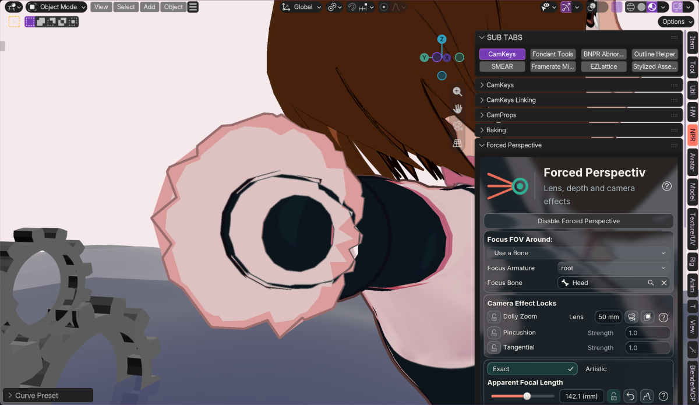
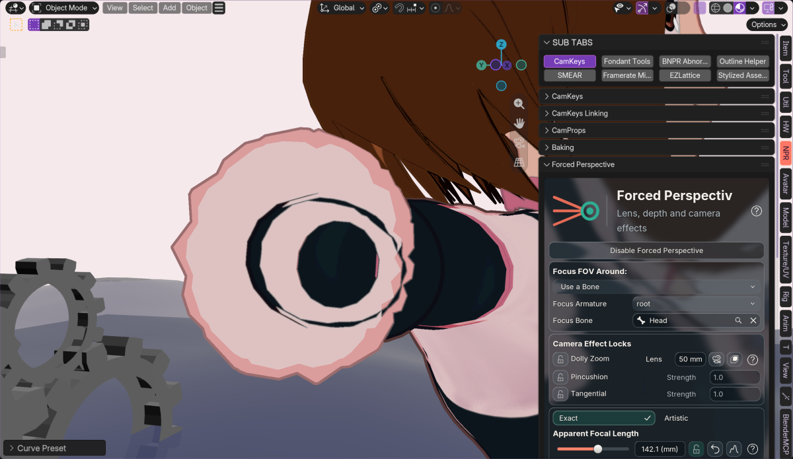

← OverviewSuperseded: the user rejected this hidden-endpoint remap; zero contour crossings did not fix the outer teeth. See schema 24 and the open defect.
Historical schema 23 clipping experiment
Uraraka · same view, pose and 142.07 mm apparent lens · Blender 5.2.2 / Mac Metal · schema 23

Before · 16 contour self-crossings
After · zero contour self-crossingsWhat changed
Exact uses Blender’s actual near-plane clipping at every focal length. The Geometry Nodes correction stabilizes hidden endpoints so their lateral projection no longer flips through the camera origin. It does not move already visible vertices, delete faces, rebuild topology, add a cap, or reveal hidden endpoints. Native clipping still cuts the crossing triangles.
Artistic retains the existing short-lens safeguard and now owns the optional local compression above 215 mm, reaching full strength at 250 mm. Exact no longer automatically reveals rear geometry at high lens settings. Mode descriptions are updated in all 12 shipped languages.
The source near clip is refreshed for both Exact and Artistic, camera and viewport. An unavailable source disables this continuation instead of reusing a stale clipping distance.
Measured evidence
All 68,185 recorded vertices are finite. Every already-visible vertex is byte-identical, no hidden vertex is revealed, and all captured shadow-source positions are identical. The body contour improves from 14 crossings to 0; the wrist from 2 to 0. Mesh polygons remain intact; Blender’s internal triangulation of nonplanar quads can change after deformation.
56 execution checks pass across Blender 4.2.23, 4.3.2, 4.4.3, 4.5.15, 5.0.1, 5.1.2 and 5.2.2. Each version includes 558 oblique-tube clipping sweeps, visible endpoint/neutral/short-lens parity, partial falloff continuity, migration, source routing and near distances from 0.000001 to 0.2. The public repair path was rechecked on all seven versions after a manual QA reload omitted source rewiring.
Final retained 32,001-point tests: old/new medians 1.81/1.92 ms; repeat 1.71/1.84 ms. Added cost is about 0.11–0.14 ms in that run; an earlier run measured 0.25–0.33 ms. These are geometry evaluation timings, not viewport FPS. No new timer, Python vertex scan, GPU readback, or geometry reduction.
Conservative offscreen policy
Keep all faces and let Blender clip them. One neighboring face is not enough to prove that a deformed face is irrelevant to the image or shadows, so face removal/skipping is not enabled. The retained field continuation avoids the visibility-cache and topology-change costs of that approach.
The cut is polygonal at the mesh’s resolution, not a smooth capped surface. Evidence covers the reported view and specified regression sweeps; arbitrary masks and all possible meshes are not proven collision-free. Physical Windows Vulkan/OpenGL requalification remains open. No new motion GIF. Dirty scene remains unsaved.
Structured results and limits